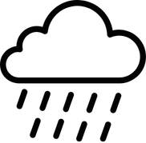

Mapa Satelital / Vial
Bajo
Medio
Alto
📍 Haz clic en cualquier calle para situar tu reporte
© OpenStreetMap · Open-Meteo Live
¿Qué está pasando en tu ubicación?
Se registrará tu reporte en el mapa de forma inmediata
¿Por dónde lloverá hoy?
Pronóstico de lluvias

Playa norte
- 85% de probabilidad (5:00 pm)
Col. centro
- 85% de probabilidad (7:00 pm)
Observaciones Open-Meteo
Actualizado
Lluvia
0.0 mm
Temp
-- °C
Humedad
-- %
Viento
-- km/h
Riesgo de inundación por zona
Alto:
Col. 23 de Julio, Arroyo de los Franceses
Medio:
Av. Isla de Tris y Av. Aviación, Centro Histórico
Bajo:
Col. San Nicolás, Justo Sierra